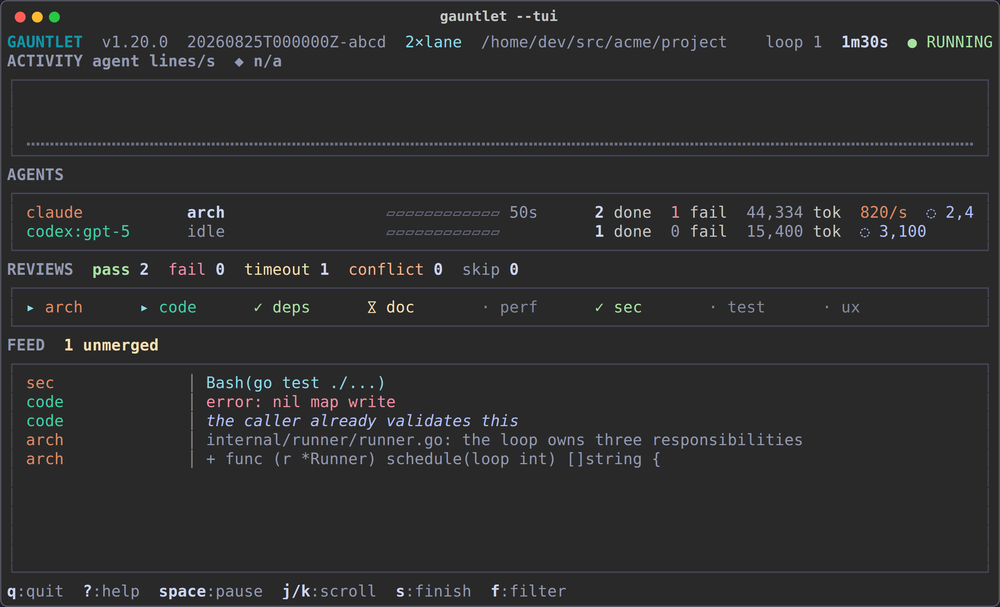

Run your codebase through the gauntlet: 54 specialized review prompts, dispatched to whichever AI coding agents you have installed, applying fixes directly to the working tree.

What it does
One static binary loops 54 review prompts over your repository, hands each one to an agent CLI you already have installed, and applies what it finds.
- Isolation in parallel.
--jobs Ngives N lane worktrees pulling from a shared queue, each review on its own branch, merged back one at a time. - Unmerged review stacks.
--stacked-prsopens each changed review as a child PR of the previous one. The branch in your editor never changes. - A dashboard.
--tuiputs lanes, throughput, the review grid, and a normalized feed on one screen. - Measured, never guessed. Token counts come from what the agent reports; an agent that reports nothing shows no rate.
- A record. Every run is JSONL under
~/.gauntlet, replayable withgauntlet show.
Quick start
gauntlet doctor # which installed agents it can use
gauntlet pick # compose a run
gauntlet -r quick --stacked-prs --pr-base mainWorks with claude, codex, gemini, qwen, cursor-agent, opencode, and more. Linux and macOS. Install steps are in the README.